Cavitation BEM
Numerical evidence and open accuracy gates
Research model: physical cavitation validation has not passed. Endpoint and trailing-edge numerical checks are available; the default 2D branch fails an additional wetted-pressure consistency screen. A matched experimental benchmark and an admitted independent free-boundary solution are still required. These results are not a three-dimensional cavitating-wing analysis.
Current solver identifies the implementation used for each recorded test. The 2D path uses smooth-contact recovery selection plus velocity Kutta; its core equations are unchanged from 0.3.2. The fully wetted 3D body path uses source rings. The developed-disk path now uses continuous linear-vortex rings and reports reconstructed and direct-field pressures separately. “Independent Hess–Smith” is a separate 2D velocity-source/vortex discretization; an “exact” curve is an analytical solution. Neither means experimental data.
What is verified, and what is not?
A small equation residual means that the discrete equations were solved. Agreement with an independent numerical method is verification. Comparison with matched measurements is experimental validation. These are different checks.
| Model / evidence | Current result | Scope |
|---|---|---|
| 2D fully wetted cylinder and Joukowski foil | Analytical verification passed | Potential, velocity and signed Cp; no cavity. |
| Fully wetted cambered NACA2412 / 4412 | Independent Hess–Smith comparison passed | Different discretization of the same noncavitating problem; not measurements. |
| 2D partial cavity | Independent free-boundary gate NOT PASSED | Intersecting branches and wetted-pressure violations remain diagnostic trials, including the numerically converged default case. |
| Axisymmetric sphere / prolate, fully wetted | 61 numerical checks passed | Exact pressure, independent ring quadrature and off-collocation tests; no developed cavity. |
| Axisymmetric developed disk cavity | Implemented; off-grid gate NOT PASSED | All nodal reconstruction and nine-fraction direct-field samples retained. Separate research mode, not a validated cavity prediction. |
| Disk cavity at matched σ = 0.3 and 0.7 | Published-theory Cp comparison available | Digitized Brennen (1969) numerical reference at three meshes. No experimental or complete-field accuracy pass. |
| Developed-cavity experiments | Not yet validated | No measured cavity shape, pressure or drag agreement is claimed. |
Rejected-case display check: NACA2414 at 0.1 degrees, detachment 0.01 and cavity length 0.4 is rejected. Its trial sigma and lift are diagnostics, not accepted predictions. The user interface separates these values and disables accepted-result exports. Solver rejection does not prove that cavitation is absent.
Disk cavity: comparison with matched published theory
The current 0.2.1 stable-kernel axisymmetric solver is compared with the theoretical disk pressure profiles at σ = 0.3 and 0.7 in Brennen (1969), p.680, Figure 3 (author's source record). This is a published numerical-reference comparison, not experimental validation. Six fresh nonlinear solves use the same disk and Riabouchinsky image closure. For each mesh, the full disk-to-image separation L/R is solved until the computed σ matches the reference within 5 × 10−8; no pressure-profile parameters are fitted.
| Condition | Matched definition / limitation |
|---|---|
| Geometry and closure | Axisymmetric circular disk of radius R; downstream artificial image disk. L is the full separation, not the distance to the widest cavity point. |
| Flow and normalization | Steady, incompressible, inviscid potential flow. Cp = 1 − (q/U)²; original r/C uses C = disk radius, identical to current r/R. Reynolds number is not a parameter of these theoretical curves. |
| Walls | The current domain is unbounded. Page679 §9 states that fixed-σ profiles for different H/C are indistinguishable on Figure3's scale. Matching is therefore limited to the scan's reading resolution. |
| Reference samples | 16 visible points per σ; manual bounds ±0.006 in r/R and ±0.012 in Cp. These are scan-reading bounds, not statistical or experimental uncertainties. No hidden endpoints are inferred. |
| Mesh labels | Nc = cavity bands; Nf = Nc/2 on each disk face; total N = Nc + 2Nf. Nc32/64/128 therefore means 64/128/256 total boundary bands. |
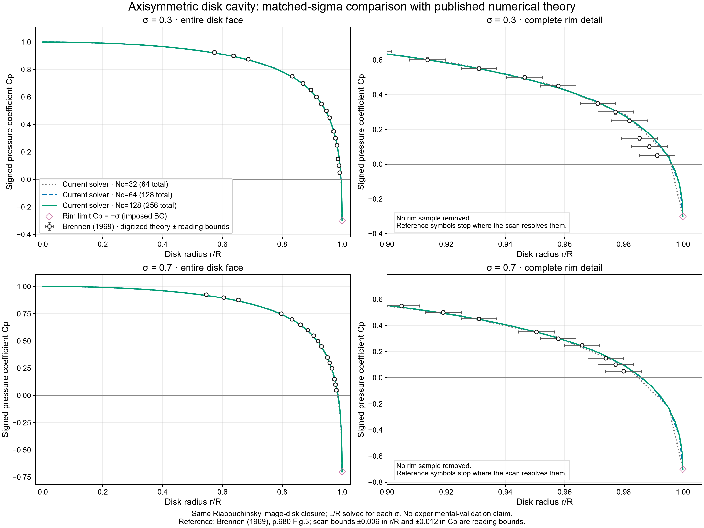
At the digitized locations, the σ=0.3 pointwise Cp RMS difference is 0.02661 → 0.03186 → 0.03237 as Nc increases; this is not monotone convergence toward the scanned reference. For σ=0.7 it is 0.01586 → 0.01469 → 0.01488. All points overlap the conservative two-coordinate reading rectangles, but that overlap is not an accuracy gate: horizontal reading uncertainty becomes a large Cp interval near the steep rim curve. No percentage error is inferred from these scan bounds.
| σ target | Nc / total N | Solved L/R | Computed σ | Max |un|/U | Max |Cp+σ| | Field screen |
|---|---|---|---|---|---|---|
| 0.3 | 32 / 64 | 8.705296 | 0.2999999991 | 0.09270 | 0.28730 | Not passed |
| 0.3 | 64 / 128 | 8.606550 | 0.2999999994 | 0.05029 | 0.16182 | Not passed |
| 0.3 | 128 / 256 | 8.578057 | 0.2999999995 | 0.02572 | 0.08355 | Not passed |
| 0.7 | 32 / 64 | 3.083071 | 0.6999999973 | 0.07596 | 0.27960 | Not passed |
| 0.7 | 64 / 128 | 3.071750 | 0.6999999976 | 0.04022 | 0.14950 | Not passed |
| 0.7 | 128 / 256 | 3.068296 | 0.6999999977 | 0.02037 | 0.07641 | Not passed |
Close reconstructed disk Cp is not a complete-field pass. Every matched case converges its nodal equations below 10−10, but the independent direct-field maxima exceed the unchanged 0.01U normal-velocity and 0.02Cp cavity-pressure limits. Every case remains accuracyQualified: false.
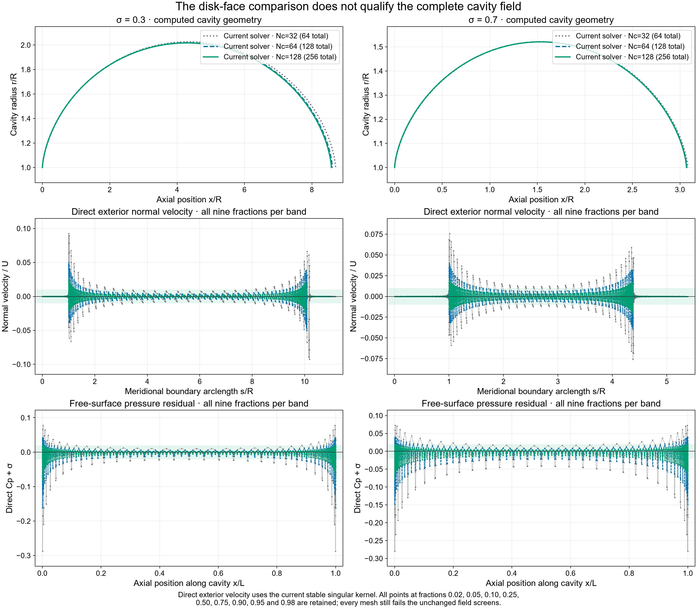
The experimental squares in Brennen Figure3 are Rouse & McNown (1948) at σ=0.24. Exact body/shank, tunnel and Reynolds-number matching for those reproduced points has not been established here, so they are not included as matched experimental data. Likewise, a finite-tunnel sphere test is not relabelled as an unbounded disk. For the 2D hydrofoil, the published zero-recovery example and finite termination-wall models require their own matching closure; the current 2D physical-admission failure remains open.
Conditions, primary sources and limitations · Reproduce all six solves · Raw pixel transcription · Reproduce figures · Exact evidence files and hashes.
New: stable axisymmetric kernel and declared surface traces
Axisymmetric cavity version 0.2.1 removes cancellation between the elliptic ring kernel and its planar singular part. An independent 400-digit calculation of the original expressions checks the rearrangement. A declared boundary-panel trace now selects the mathematical liquid/interior limit despite coordinate roundoff; off-surface declarations and endpoints are refused. Neither pressure targets nor physical coefficients are fitted.
At 64 cavity panels the same Newton equations now reach a residual of 7.11 × 10−15, below the unchanged 10−10 tolerance; the previous kernel stalled at 2.51 × 10−10. The audit now retains nine fractions of every panel: 0.02, 0.05, 0.1, 0.25, 0.5, 0.75, 0.9, 0.95 and 0.98. A pass on the earlier five-fraction grid is not interpreted as a continuous-boundary pass.
Field accuracy remains unqualified. At 256 cavity panels the expanded-grid maximum normal and pressure residuals are 0.01260 U and 0.04152 Cp, above the unchanged 0.01 U and 0.02 Cp limits. This is a numerical repair, not completed physical or experimental validation. The two-dimensional wetted-pressure defect also remains unresolved.
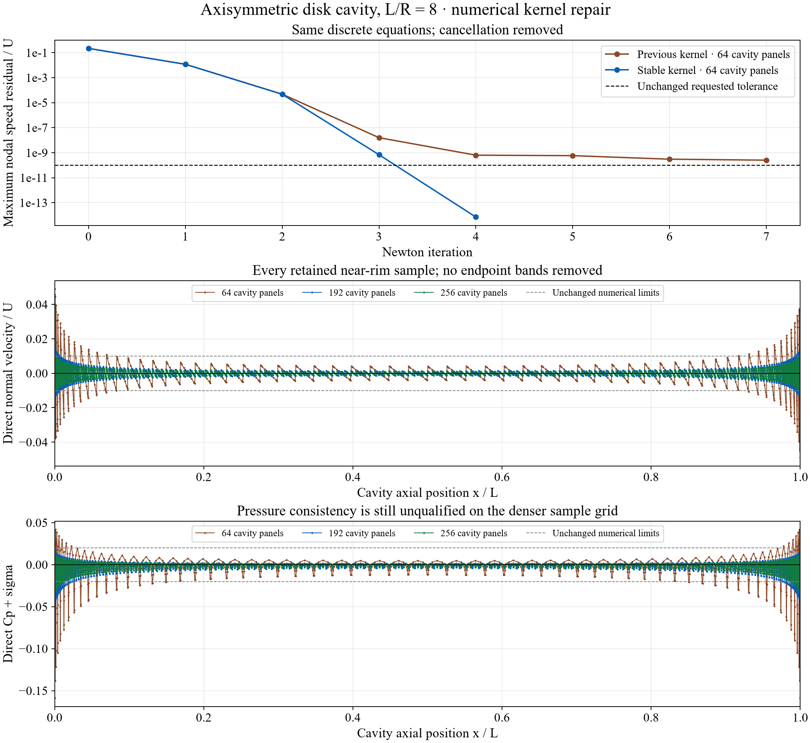
20 independent repair checks · Reproducible tests · Python parity and input controls · 19 controller/worker checks. Elliptic expansion reference: NIST DLMF §19.12. Older numerical records below retain the version and sample grid originally tested.
New: automatic smooth detachment
The optional Brillouin–Villat search solves the leading detachment coefficient β=0; zero starting slope alone cannot select the station. The unchanged prescribed-station calculation remains available. Numerical improvement is verified; physical admission still fails.
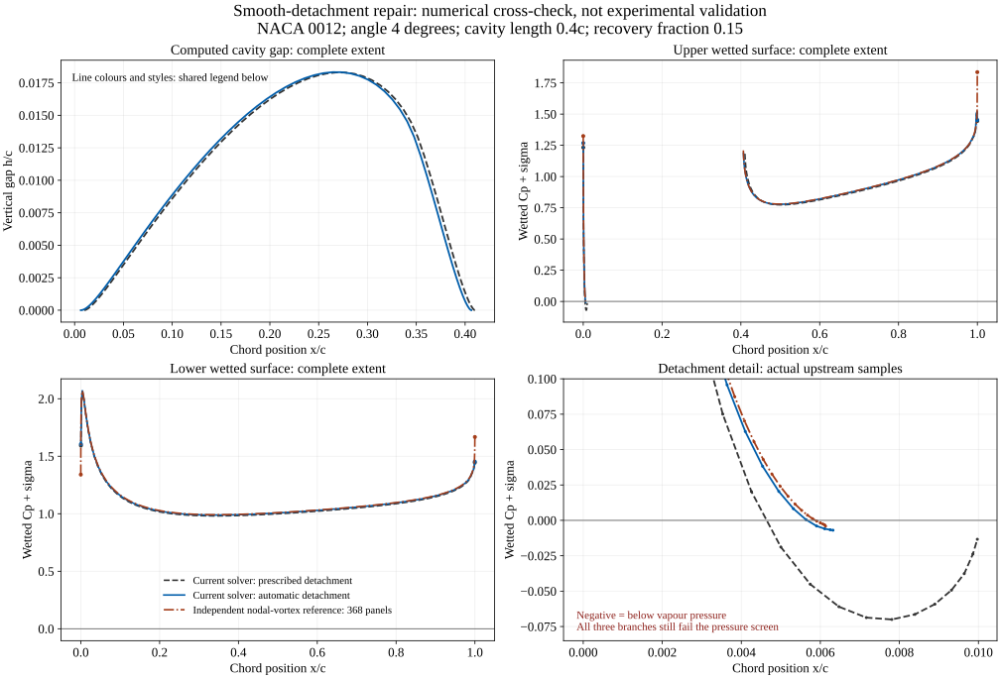
Complete profiles and independent controls · 10 implementation checks and fresh solve · 21 controller checks · Equations and limitations. The pressure screen is mandatory; no finite pressure allowance or altered contour is used to force acceptance. A numerical root is saved separately from accepted physical results.
Original continuous-vortex port · version 0.2.0 record
The browser now uses a continuous linear vortex sheet with a nodal free-surface speed reconstruction. A separately executed Python reference reproduces its shape, σ and physical disk drag. Reconstructed pressure is distinct from direct field pressure, and both are shown. Independent field accuracy remains unqualified.
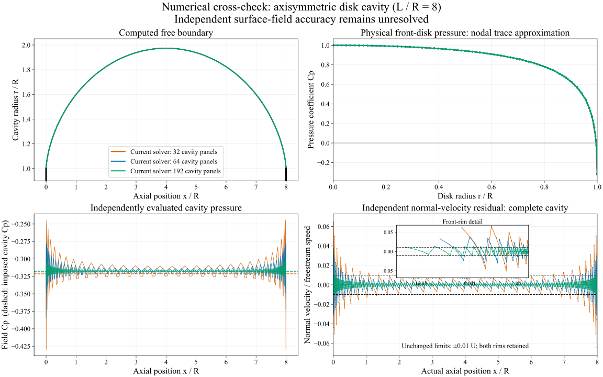
Open the upgraded research solver · All 5,120 comparison samples and refinement data · Kernel, control and nonlinear Python/JS checks · 19 controller/export checks · Source hashes and scope. Signed total flux can cancel; local profiles and mean absolute normal velocity are also reported. No experimental validation is claimed, and an inferred literature normalization is not treated as a passed reference.
Read the complete method and reproduction commands.
Retained earlier implementations and checks
These figures document their stated formulations and dates. Earlier failed constant-source/independent branches are not substituted for the new solver results above.
2D equilibrium-pressure consistency
The unchanged BEM equations may converge while the liquid still labelled wetted has Cp + σ < 0. In the assumed equilibrium model this is below vapour pressure outside the cavity. Version 0.3.2 reports that failure separately and withholds accepted physical outputs; raw trial geometry and pressures remain available.
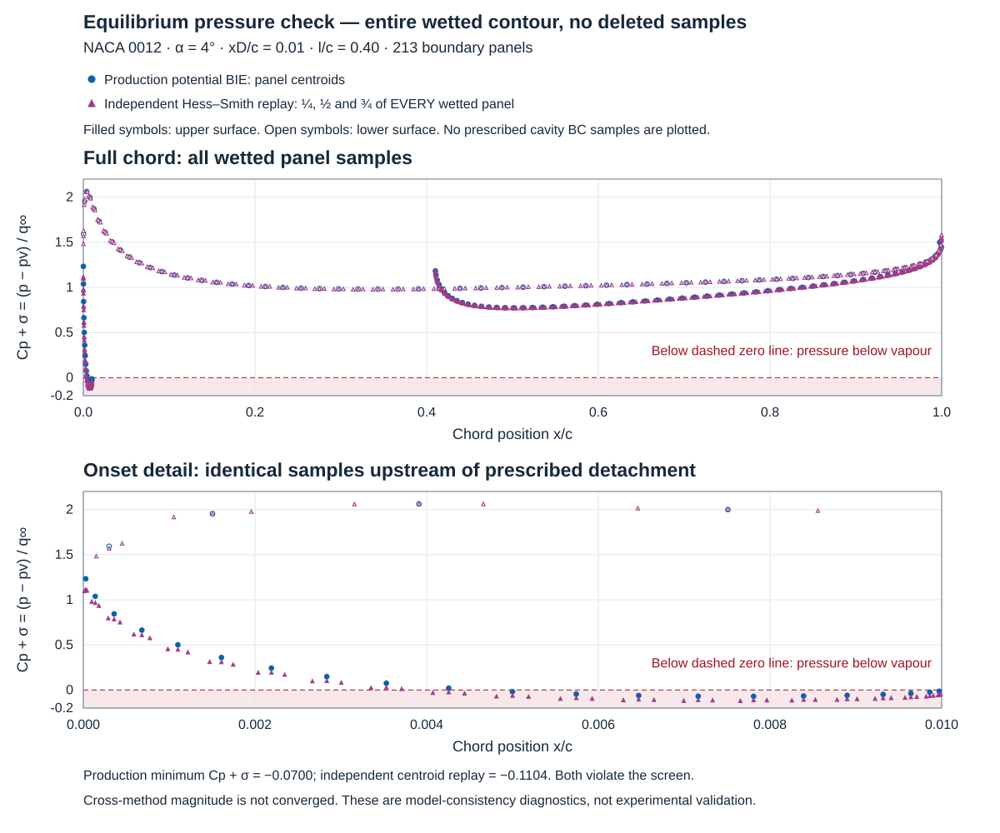
Screen, equations and reproduction; bit-for-bit regression; complete production samples; independent replay samples. Automatic-detachment trials were investigated and failed admission; they were not substituted for the user's input.
Cambered airfoil sections
Four-digit NACA mean-line geometry with normal thickness offsets is now supported. The numerical check below uses fully wetted NACA2412 and NACA4412, with both methods solving the identical prescribed contour. The first and last panel values remain visible.
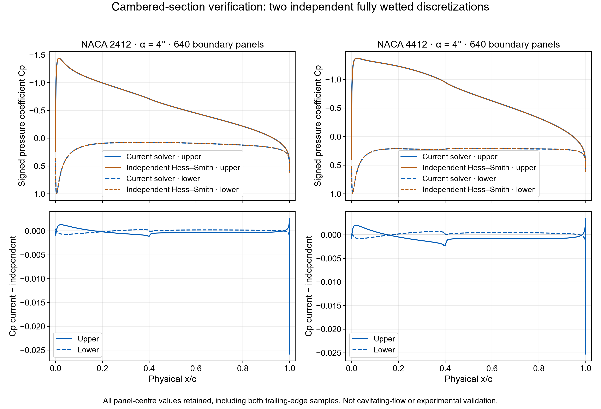
The historical NACA2412 example at α4°, detachment x/c0.01 and length0.40c is numerically converged, which is not physical admission: at 107 boundary panels, σ=1.16462 and equivalent-contour CL=0.74015. NACA4412 with the same closure settings is rejected because its cavity intersects the original foil. These historical checks predate the added wetted-pressure screen. Changing airfoil geometry does not guarantee an admissible equilibrium cavity. Geometry, backward-compatibility and cavity checks; NACA2412 result.
True three-dimensional axisymmetric flow
Fully wetted flow and an inception indicator only. The sphere and prolate spheroid are surfaces of revolution integrated as three-dimensional source rings. Their computed pressure is compared with independent analytical potential-flow solutions; the exact values do not enter the boundary solve. This fully wetted mode does not itself solve a developed cavity; the separate research module above does. The exact curves are evaluated at the corresponding analytic meridional midpoint parameter; the numerical body uses conical bands.
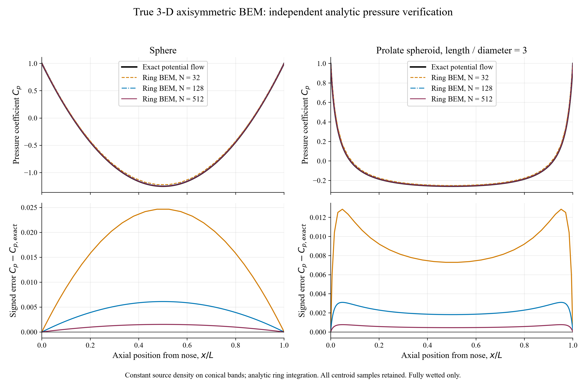
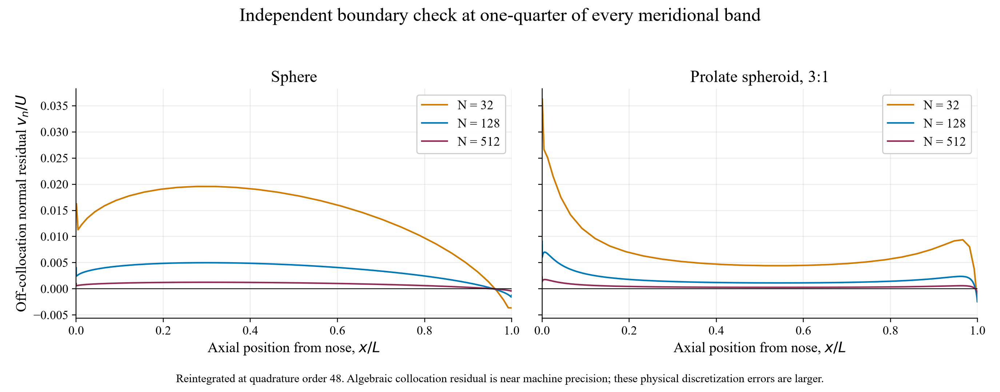
The Bernoulli criterion compares σ=(p∞−pv)/(½ρU²) with −min Cp of the wet solution. A wet-flow pressure below vapour pressure indicates that this wet solution is no longer physically sufficient there; it is not relabelled as a solved cavity. Viscosity, nuclei and tunnel effects are not included. Equations, signs, self-panel quadrature and limitations.
The axisymmetric extension is informed by Alavi & Roohi, Cavitation review Part I (2026). Its disk/sphere free-cavity comparisons require matched detachment, closure and tunnel conditions; they are not used as experimental validation of this wet-flow module.
Historical constant-source disk-cavity formulation
The previous constant-source research implementation is retained in axisymmetric-cavity.js; the current browser uses the new vortex formulation above. A sharp circular disk and downstream Riabouchinsky image disk bound an inverse fixed-length problem. The cavity shape and σ are solved using three-dimensional source-ring BEM; this is distinct from the fully wetted sphere/prolate mode.
Off-grid numerical admission has NOT PASSED. At 128 cavity bands, maximum independent normal residual is 0.0227 U and maximum dynamic residual |Cp + σ| is 0.0597, above the unchanged limits 0.01 U and 0.02. Tiny fitted residuals do not establish boundary accuracy. No matched experimental cavity validation is claimed.
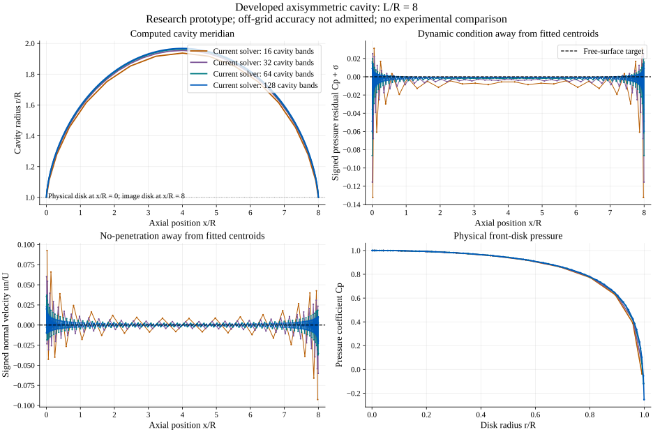
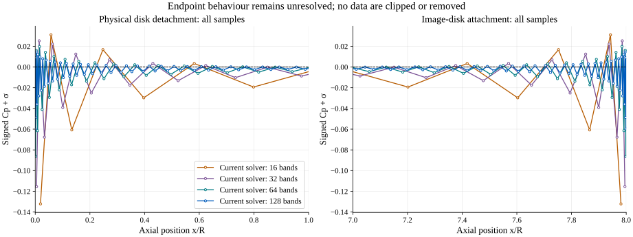
Equations, units and limitations; 16 implementation checks and failed accuracy gates; separate Python reproduction; 14 controller/worker checks. Implementation parity and residual refinement are verification, not experimental validation.
2D symmetric-cavity numerical repair
What changed
The old fixed recovery attenuation could close the cavity height while leaving a growing endpoint corner. The current model solves attenuation A with a physical-gap tangent-contact equation. An independent wake-strength unknown and a velocity Kutta row also replace the default potential-jump approximation. Historical fixed-A/Morino calculations remain available for old case files.
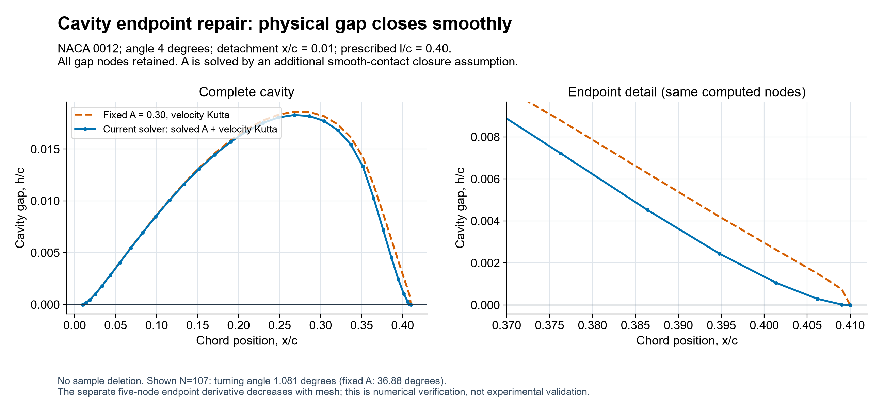
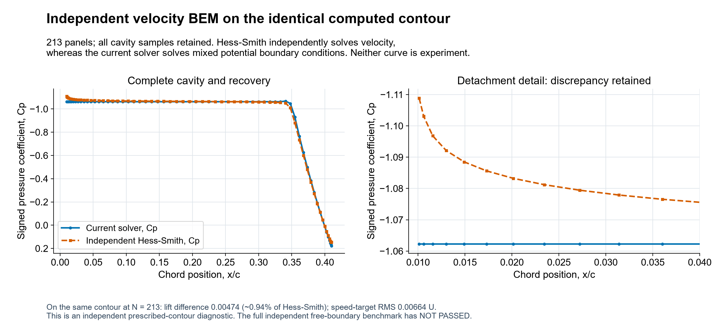
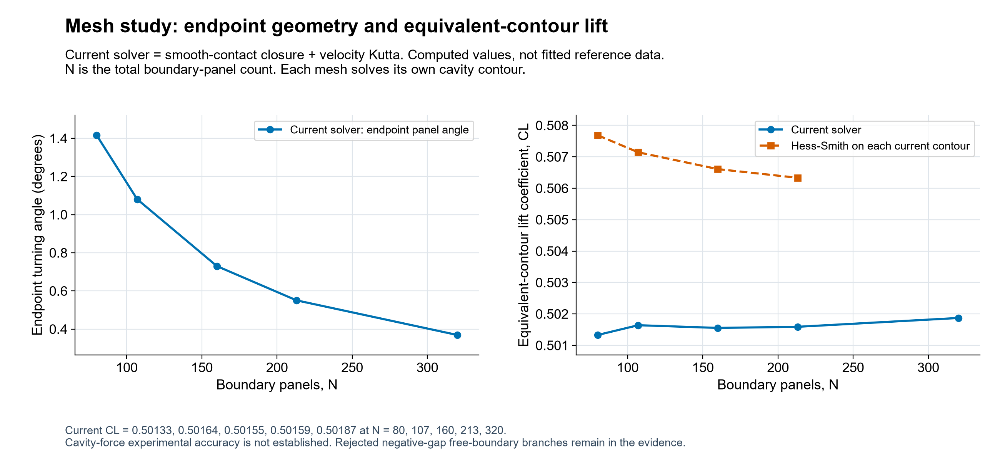
Evidence and limits
| Check | Actual result | Meaning |
|---|---|---|
| Exact noncavitating Joukowski flow, 640 panels | CL absolute error 0.000388; all-panel Cp RMS 0.000289 | Velocity-condition numerical verification; raw results |
| Independent velocity solver on identical cavity contour, 213 panels | CL 0.50159 versus 0.50633; difference about 0.94% | Cross-discretization diagnostic; all cavity samples |
| Independent full free-boundary cavity solve | NOT PASSED: converged negative-gap branch rejected | No physical cavity validation; failed branch retained |
| Acosta thin-flat-plate limit | NOT PASSED | Separate sharp-leading-edge asymptotic benchmark; recorded failures |
| Experimental cavity pressure, shape and force | Not performed | No experimental accuracy claim |
| 13 one-factor input cases, 107 panels | Historical numerical checks: 10 converged; 3 rejected | Predates the wetted-pressure screen; not a physical admission count. inputs and complete gaps |
Numerical convergence, nonintersection, endpoint regularity and the separate wetted-pressure screen are distinct checks. None alone establishes physical validation. A small residual cannot turn a negative cavity gap into an accepted solution. Pressure-reconstruction differences near the mixed-boundary junctions remain visible in the result table.
The independent free-boundary solve's negative-gap result does not prove that a positive branch cannot exist. It does mean that this independent validation gate remains open. Cavitation drag, re-entrant-jet dynamics, shedding, collapse, viscosity and structural load transfer are outside this prototype.
Reproduce
Run verify.cjs, test-smooth-closure.cjs, test-velocity-kutta.cjs and ui-smoke.cjs from the validation folder with Node.js. The last is a controller/DOM test; it does not claim interactive Chrome or Firefox acceptance. Plot sources and JSON data are provided alongside the figures.
Method sources: Kinnas–Fine (1993); Kinnas chapter 9; Krishnaswamy thesis, sections 2.3 and 3.3. The smooth-contact selection is an additional model assumption, not a claim to reproduce PCPAN.